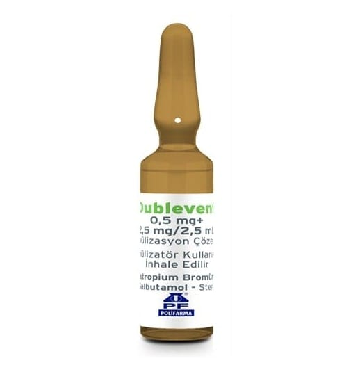

Dublevent 0,5 mg+2,5 mg/2,5 ml Nebülizasyon Çözeltisi, 20 Adet

Ne için kullanılır
KT · Bölüm 1İlacınızın adı DUBLEVENT’tir. Bu ilacı, nebülizatör adı verilen bir aletle kullanacaksınız. Bu alet, ilacınızı solunum yoluyla alabilmeniz için buğu haline çevirir. DUBLEVENT iki farklı ilaç içerir: • İpratropium bromür • Salbutamol sülfat Her iki ilaç da “bronkodilatörler”, yani “bronş açıcılar” adı verilen bir ilaç grubunda yer alır. Bu ilaçlar “kronik obstrüktif akciğer hastalığı” ya da kısaca KOAH denilen bir hastalıkta daha kolay nefes almayı sağlamak için kullanılır. Bu ilaçlar, solunum yolunuzu açarak etki gösterir. DUBLEVENT İnhalasyon Çözeltisi, her biri bir defada kullanılmak üzere hazırlanmış, 20 adet 3 mL’lik (2,5 mL çözelti içeren) cam ampul içeren ambalajlar halinde piyasaya sunulmaktadır.